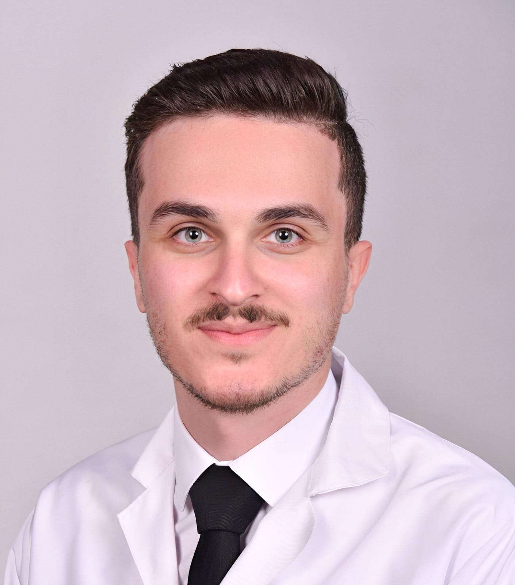

Cardiac surgery, in pursuit.
Medical intern at the Faculty of Medicine, Menoufia University, working toward a research career in cardiac surgery — with a current focus on cardiovascular meta-analysis and structural heart interventions.

Ahmed is a medical intern with active research contributions in interventional cardiology, focused on comparative outcomes between TAVR and SAVR across major randomized controlled trials. His work spans systematic review methodology, meta-analytic statistics in R, and manuscript preparation for peer-reviewed cardiology journals.
He works within a collaborative, multi-author research group on cardiovascular evidence synthesis, with particular interest in reconstructed patient-level survival modeling and structural heart device performance.